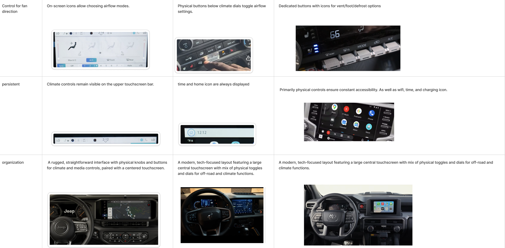
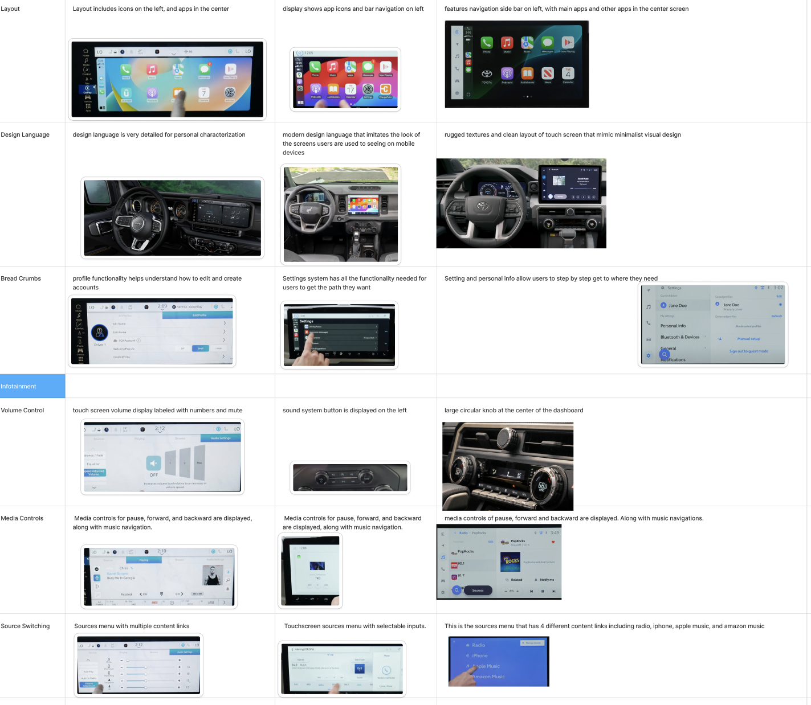
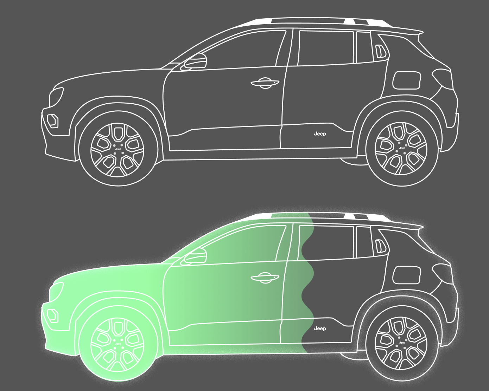
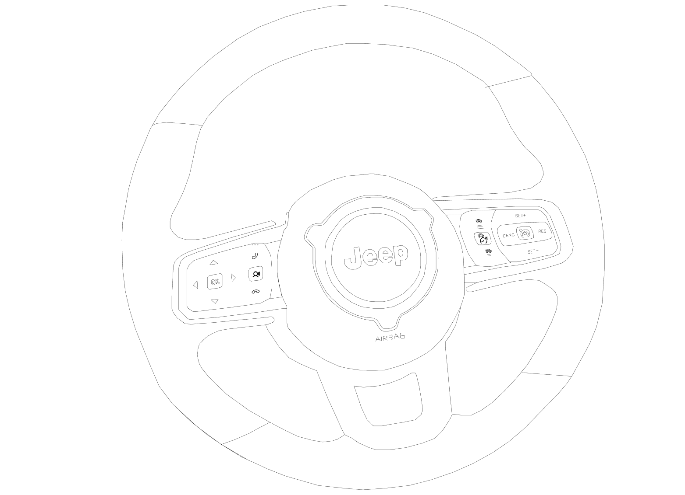
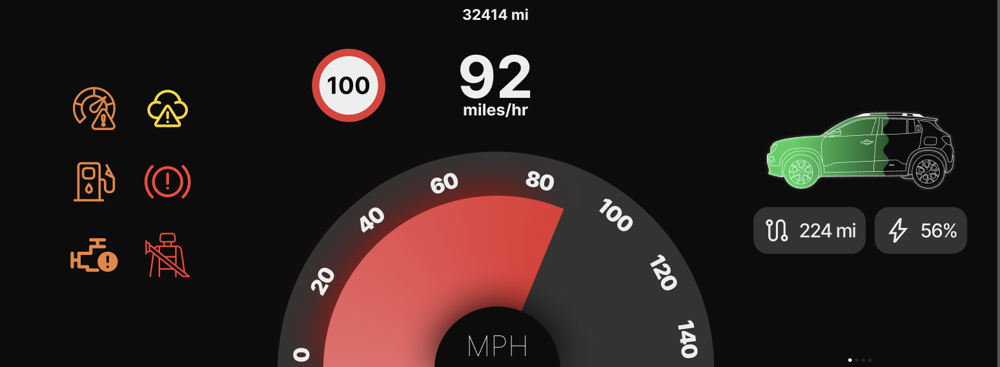
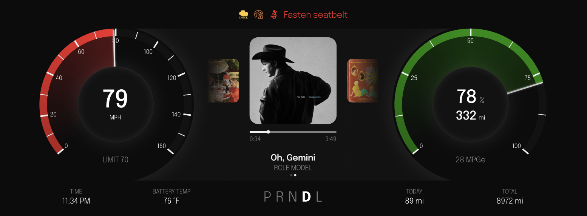
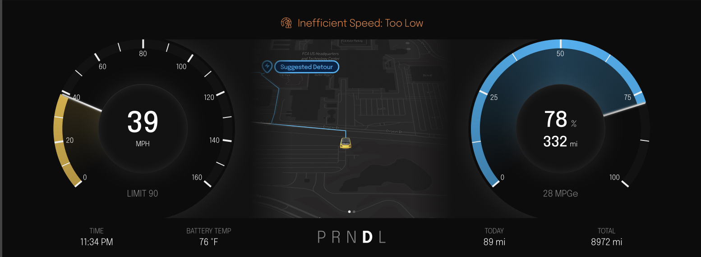
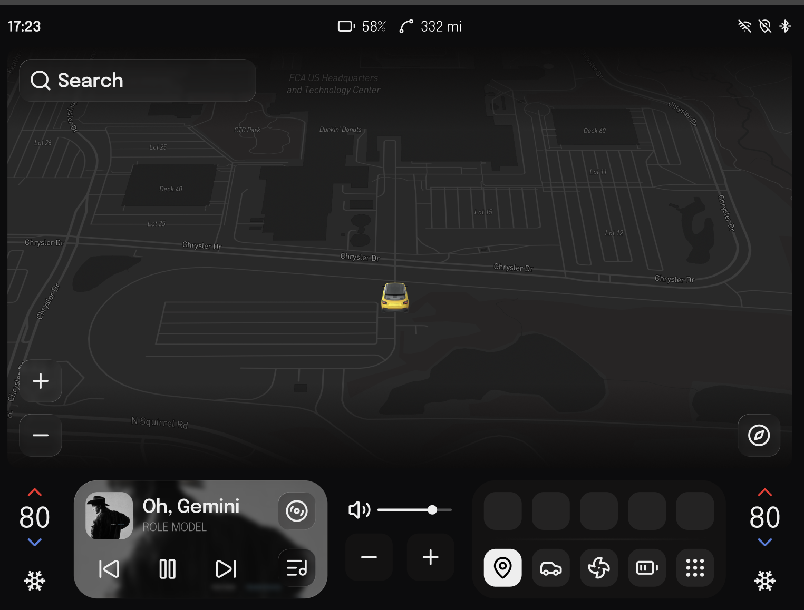

AUTOMOTIVE · UX/UI DESIGN
Stellantis IVI
2030 Multi-Modal In-Vehicle Infotainment System
01
Overview
I designed a multi-modal IVI system for a 2030 Jeep experience focused on the future of EV energy management. The project explored how an in-vehicle system could help drivers better understand their battery, plan trips, and make more efficient driving decisions.
Through competitive analysis and iterative design, I explored three core experiences: a smart trip planner, context-specific driving suggestions, and battery history and insights.
Role
Interactive Designer · Design System
Course
SI 394 Automotive UX Design
Client
Stellantis
Timeline
~3 months
Focus
EV Energy Management
Tools
Figma · FigJam · Screen Studio
02
Figma Presentation Slides
02
Prototypes
03
Design Debrief
Project Prompt
The project focused on the future of EV energy management and how both the vehicle and driver could work together to improve battery efficiency.
The goal was to help drivers better understand their vehicle, make more informed decisions, and use smart features to improve efficiency.
Problem Statement
How might we help EV drivers better manage their energy while reducing range anxiety and building confidence in their vehicle?
We focused on an eco-conscious driver with different routines and levels of EV experience. Our goal was to make battery information more understandable while helping drivers make better decisions before and during their trips.
04
Research & Comparative Analysis
Competitive Analysis
I compared the 2025 Jeep Wrangler, 2025 Ford Bronco Badlands, and 2025 Toyota 4Runner to understand how existing automotive systems approach vehicle controls, HVAC, media, navigation, and driving information.
I documented each system using screenshots and compared how well each vehicle met the required interface criteria.


Key Findings
— Information Overload
Existing driver displays contained a lot of information and icons, but did not always make it clear what action the driver should take.
— EV Information Needs More Guidance
Battery and range information can tell drivers what is happening without necessarily helping them understand what they should do next.
— Opportunity for a More Engaging Experience
Many existing automotive interfaces felt functional and serious, creating an opportunity to make EV efficiency feel more interactive and motivating.
05
Design Exploration
Early Sketches
I began by exploring the physical and digital experience through hand-drawn sketches of the vehicle, steering wheel, and interface.


Iteration
Early concepts helped me explore different directions before narrowing the experience around EV energy management. Some ideas were removed or changed as the design became more focused on the driver's needs.


06
Usability Testing
We conducted usability testing with other students to evaluate how easily users could navigate common driving tasks and understand the IVI system.
Key Findings
- Familiar icons helped navigation. Users were more comfortable selecting recognizable icons.
- Interactive elements were not always obvious. Some users hesitated because they did not realize screens were interactive.
- EV experience affected task completion. EV drivers completed tasks more quickly than non-EV drivers.
Recommendations
- Reduce scrolling. Minimize distractions while driving.
- Improve battery visibility. Make battery and range information easier to access.
- Add quick temperature controls. Allow users to cool the car without adjusting the temperature one degree at a time.
07
Key Deliverables
Smart Trip Planner
A mobile trip-planning experience that helps drivers plan EV trips and intelligently recommends charging stops along the route.
Scenario
A driver in their mid-30s, new to electric vehicles, is planning a five-day winter trip and wants a smoother way to manage charging along the route.

Trip planner overview
Smart Pop-Ups
Context-specific notifications that provide drivers with useful efficiency suggestions without becoming distracting.
Scenario
Smart notifications help drivers understand useful vehicle information and take action at the right moment.

Smart notification overview
Battery History & Insights
A battery history experience that helps drivers understand how their vehicle uses energy over time and make better predictions about future range.
Scenario
Drivers experiencing range anxiety can review their battery usage and better understand how different parts of the vehicle affect energy consumption.

Battery history overview
08
Interface Overview
The final interface brings navigation and driving information together across the vehicle displays.
Driver Display

Map View
